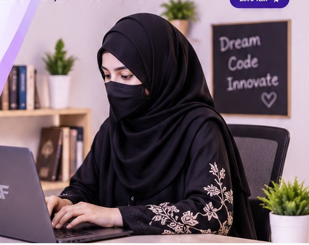

Featured project · Live website
Smart Buy PK
An independent research and technology project that helps people make more informed product-purchasing decisions through research, comparisons and purchasing guidance.
Visit Smart Buy PK ↗BS Artificial Intelligence Student · Founder of AF Techworks · Technology Enthusiast
I explore technology, build independent projects and develop practical skills across AI, programming and web development. I believe thoughtful ideas deserve clear execution — and every project is an opportunity to learn, create and improve.

Each section opens as its own page, with further details and dedicated areas to explore.
My background, interests, values and professional direction.
Open page ↗Explore each skill individually, with its own detailed page.
Explore skills ↗Independent work, Smart Buy PK and future project space.
View projects ↗Matric, FSc and current university education details.
View education ↗Founder journey, independent work and practical learning.
View journey ↗Milestones, accomplishments and room for future recognition.
View milestones ↗A dedicated company profile, identity, vision and services.
Explore company ↗Professional links and contact details.
Get in touch ↗An independent research and technology project that helps people make more informed product-purchasing decisions through research, comparisons and purchasing guidance.
Visit Smart Buy PK ↗Product exploration, quality and price comparison, budget-aware decisions and availability sources.
Every skill below opens a dedicated detail page. Descriptions are intentionally honest and grow with experience.
AI concepts, intelligent systems, machine learning foundations and responsible technology exploration.
Explore this skill ↗Programming fundamentals, problem-solving practice and structured code development.
Explore this skill ↗Core programming concepts, logic, conditions, loops, functions and computational thinking.
Explore this skill ↗Building and improving web experiences with attention to usability, structure and responsive design.
Explore this skill ↗Breaking challenges into manageable parts and developing logical, practical approaches.
Explore this skill ↗Understanding how components, processes and user needs work together as a complete system.
Explore this skill ↗Using productivity tools to prepare, organize and present information clearly.
Explore this skill ↗Creating structured presentations and digital content with a clear visual message.
Explore this skill ↗Exploring ideas, comparing information and turning research into independent projects.
Explore this skill ↗AF Techworks is a technology-focused initiative founded by Aleeha Fatima, with an interest in AI, web development and digital solutions.
Explore AF Techworks ↗Official launch date of AF Techworks.